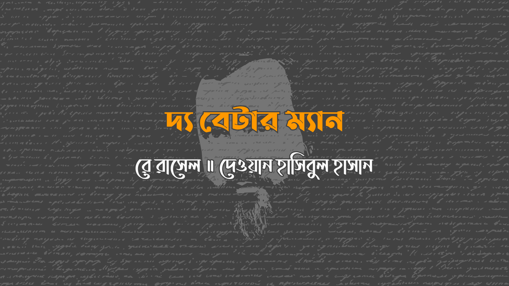

সে সুন্দরী, কমনীয় আর চমৎকার, তবে সে এর কোনোটি না হলেও তা গুরত্বপূর্ণ না। গুরুত্বপূর্ণ হলো সে একটি মেয়ে। বস্তুত খুবই গুরুত্বপূর্ণ, কেননা তাকে বলা হচ্ছে শেষ মানবী।
সেকারণে, সে পৃথিবীর ভরসা, এমন পুরস্কার যার জন্য যুদ্ধ করা যায়। তার দুই দাবিদার– নিজ লিঙ্গের শেষ লোক– নিজস্ব পৃথিবীর গোধূলীতে দাঁড়িয়ে আছে, আমৃত্যু যুদ্ধ করতে প্রস্তুত। বিজেতা হবে নতুন আদম, ছাই আর পাথরের স্বর্গে।
“তোমাদের অস্ত্র নামাও,” মেয়েটি বললো। “যথেষ্ট হানাহানি হয়েছে। তোমাদের মধ্যে কে সেরা মানব তা আমরা যুক্তি দিয়ে বিচার করবো।”
“আমার নাম ‘জন’,” খোঁড়া আর টাক লোকটি বললো, “আর আমিই সেরা মানব। এটা সত্যি যে আমার দৃষ্টিশক্তি আগের মত নেই, আমি এক কানে শুনি না, দিনে দিনে আমার এই কাশি এসে জুড়েছে, আমার দাঁতগুলো নকল, আর রেডিয়েশনের দরুন আমার জিন কতটা ক্ষতিগ্রস্থ হয়েছে তা নিশ্চিত ভাবে বলতে পারছি না, তবে আমি শিক্ষিত, কাজে দক্ষ, আর আশা করি, বয়সের অভিজ্ঞতায় আমি বিজ্ঞ।
“তোমাকে ধন্যবাদ, জন,” মেয়েটি মিষ্টি করে বললো। “আর তুমি, যুবক?”
“আমার নাম ‘নয়’,” অপরজন বললো, যে লম্বা আর সুদর্শন, “আর আমি কোন মানুষ না। আমার পুরো নাম ‘নয় চার ছয় তিন সাত, দশমিক, শূন্য শূন্য পাঁচ দুই আট’। আমি একটা অ্যানড্রয়েড। তবে আমি সেরা মানব।”
জন হেসে উঠলো। “সেরা মানব! একটা প্লাস্টিক হাড্ডি, কেমিক্যাল রক্ত, আর কৃত্তিম মাংসের পিন্ড? হাস্যকর!”
মেয়েটি জিজ্ঞেস করলো, “তুমি কেন নিজেকে সেরা মানব দাবি করছো, নয়?”
নয় গলা পরিষ্কার করলো, “আমি তোমাকে রোবোট আর অ্যানড্রয়েডের ইতিহাস বলে বিরক্ত করবো না,” সে বলতে শুরু করলো।
“দয়া করে থামো,” জন বাঁধা দিলো।
“আমি নিশ্চিত যে তোমরা দুজনই জানো,” নয় বলে চললো, “গত কয়েক শতকে অ্যানড্রয়েড উৎপাদনে কতটা উন্নতি হয়েছে?”
জন শ্রাগ করলো, “চোখ টিভি ক্যামেরার বদলে চোখের মতই কাজ করে।”
“চুল আর নখও বড় হয়,” মেয়েটি বললো।
“রেচন তন্ত্রও আমাদের মত,” জন ঘোঁতঘোঁত করলো, আর আঁকুতি করলো, “মাফ করো, মিস।”
“হাসি,” মেয়েটি বললো। “কান্না।” হাসলো সে।
নয়ও তাকে হাসি ফিরিয়ে দিলো। “ঠিক বলেছো,” সে বললো। “আমরা যতোই কার্যকরি হয়ে উঠেছি, স্বাভাবত ততোই আমারা মানুষ হয়ে উঠেছি, কারণ মানুষের দেহ আর মস্তিষ্ক এখনো সবচে কার্যকরি যন্ত্র। প্রায় বলতেই পারো, যখন তোমরা মানুষেরা নকল-দাঁত, নাক-বুকের প্লাস্টিক সার্জারির ভিড়ে হারিয়ে যাচ্ছো, রেডিয়েশনে ক্রমাগত বিকৃত আর পরিবর্তিত হয়ে অমানব হয়ে উঠছো, আমরা অ্যানড্রয়েডেরা হয়ে উঠছি আরো মানব। পরিহাসের বিষয়।”
“খুব,” বললো জন, হাই তোলা থেকে বিরত থাকলো।
নয় বললো, “ব্যাপারটা হচ্ছে, জন, তুমি বুড়ো আর দুর্বল হয়ে যাচ্ছো। আর আমার এই দেহ– নকল হতে পারে– আরো একশ বা তার বেশি বছর টিকবে, ভালভাবে। আমি তোমার থেকে শক্তিশালী, উপরন্তু, আমার দৃষ্টিশক্তি, শ্রবণশক্তি ভাল, সংবেদনশীল, যেসব নতুন পৃথিবী গঠনে অপরিহার্য। তাই তুমি দেখতেই পাচ্ছো,” সে উপসংহার টানতে হাত প্রসারিত করে বললো, “এখানে কোন প্রতিযোগিতাই নেই।” ঠোঁট বাঁকা করে জন বললো, “তুমি একটা ব্যাপার ভুলে যাচ্ছো।”
“না, ভুলি নি,” বললো নয়। “আমাদের অ্যানড্রয়েডদের সমাবেশ সারি আর ল্যাবরেটরিতে একসাথে রাখা হতো, স্বীকার করছি, তবে এখন আর না। সবাই জানে না, তবে অনেকদিন হলো সস্তায় আর সহজে প্রজননক্ষম অ্যানড্রয়েড উৎপাদিত হচ্ছে। আদপে, কোন এক গোপন ল্যাব পরীক্ষায় প্রমাণিত হয়েছে, অন্তত তাত্ত্বিকভাবে, আমরাও, আ…, মানুষের সাথে মিলিত হতে পারবো।
জন ঢোক গিললো আর তোঁতলাতে থাকলো, “কিন্তু সেটাতো– অসভ্যতা, আর– শুনিনি কখনো, আর– মানে সঙ্গী? সন্তান প্রজনন? একজন মানুষ আর একটা অ্যানড্রয়েড? অদ্ভুত!”
“হ্যাঁ, তাইনা?” জবাব দিলো নয়। “তবে এটা সত্য।”
তাদের সুন্দরী পুরস্কারখানা বেশ খানিকক্ষণ সুদর্শন, পেশিবহুল নয়কে দেখলো, তারপর ফিরলো সল্পদৃষ্টির, কাশতে থাকা জনের দিকে। “আমি ভয় পাচ্ছি যে ওর কথাই ঠিক, জন,” সে দুঃখের সাথে বললো। “ওই সেরা… মানব।”
জন দীর্ঘশ্বাস ফেললো, তবে কিছু বললো না। সে আঁকাবাঁকা ছায়ায় খুঁড়িয়ে খুঁড়িয়ে এগিয়ে চললো। এর কিছুক্ষণ পর একটা গুলির শব্দ শুনতে পেল তারা আর শুনতে পেল একটি নিথর দেহের মাটিতে লুটিয়ে পড়ার শব্দ।
“বেচারা জন,” মেয়েটি বললো। “ওর জন্য খারাপ লাগছে।”
“আমারও,” বললো নয়, “তবে এটাই জীবন।” সে তাকে নিয়ে খুপড়ির দিকে এগলো যেখানে ঘর বাঁধবে ওরা। “জানো,” সে বললো, “আমি ভয় পেয়েছিলাম জনের শিক্ষাদীক্ষা, দক্ষতা আর জ্ঞান, ভাগ্যের চাকা ওর দিকে ঘুরিয়ে দিবে…”
“প্রায় দিয়েছিলো।”
“হ্যাঁ, আমি জানি। সেজন্যেই আমি অ্যানড্রয়েড বলে ওই ছোট গুলটা মেরেছি। আমার নাম নয় না, আমি ‘বিল’, আর আমি শতভাগ মানুষ।”
“যেরকমটা আমি ভেবে ছিলাম,” বিজয়গর্বে বললো জন, ছায়া ফুরে বেরিয়ে এসেছে। “শুধু মিথ্যুকই না, বেকুবও। এতটাই বেকুব যে খানিকক্ষণ আগের সাধারণ শব্দেই বোকা বনে গেছে।” জন তাদের প্রতিযোগিতার সুন্দরী বস্তুর দিকে ফিরলো। “এমন সঙ্গী কি তোমার উপযুক্ত, প্রিয়? নীতি বহির্ভূত মানুষ? পেশিতে মোড়া পিন্ড যে কিনা একই সাথে নীতিহীন আর বুদ্ধিহীন? এই কি সেই সেরা মানব?
মেয়েটি টলে উঠলো, তবে সামান্য সময়ের জন্য। “না, জন। নতুন প্রজন্মের জন্মদাতা একজন সম্মানিত আর বুদ্ধিমান লোকেরই হওয়া উচিৎ। তুমিই সেরা মানব।”
জন বিলের দিকে ফিরলো। “বিচারক আর সভাসদগণের অনুপস্থিতিতে, আমি নিজ দায়িত্বে তোমার মিথ্যা, অস্বচ্ছতা আর ভবিষ্যৎ প্রজন্মের প্রতি অপরাধের দন্ড বিধান করছি। আর সেটা মৃত্যুদন্ড।” জন বিলের মাথায় গুলি করলো, আর ভূপাতিত হলো যুবক দাবিদার, প্রাণহীন।
“এখন, পত্নী,” বললো জন, উজ্জ্বল চোখে, “আমরা নতুন প্রজন্ম শুরু করতে আর মূল্যবান সময় অপচয় না করি। আমি, স্বীকার করছি, মৃত বিলের মত যুবকও না, সুদর্শনও না, তবে মনে করি তুমি এই বুড়ো বালকের ভেতর এখনো প্রাণ খুঁজে পাবে।”
“তুমি কি অ্যানড্রয়েড, কোন ভাবে?” মেয়েটি জিজ্ঞেস করলো।
জন বললো, “এটা আসলে সত্যি যে বিল মানুষ আর অ্যানড্রয়েডের, আ…, মিলনের ব্যাপারে পুরোপুরি নির্ভুল ছিলো। আমি এটা নিয়ে হৈচৈ করেছিলাম শুধু তোমাকে হারাতে চাইনি বলে। এক্ষেত্রে, আসলে, আমি অ্যানড্রয়েড হলেও কিছু বদলাতো না। যাহোক, আমি তোমাকে নিশ্চিত করছি আমি পুরোপুরি মানুষ, যদি এটা গুরুত্বপূর্ণ মনে হয়।”
মেয়েটি সুন্দর করে হাসলো আর তার একটা হাত ধরলো। “চমৎকার,” সে বললো। “যদি এটা গুরুত্বপূর্ণ মনে হয়, আমি নই।” আর তার বিষ্ময়াভাবকে চুপ করিয়ে দিলো এক প্রশংসনীয় খাঁটি চুমু এঁকে।